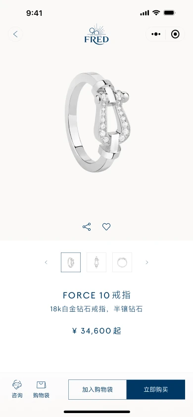
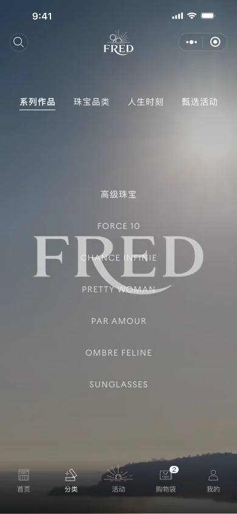

FRED · 微信小程序
FRED 小程序｜访客下单体验设计
让不想注册会员的顾客也能在微信小程序下单，并且在支付后知道去哪里查订单。
购买及查单设计按期交付，通过客户验收。
- 项目
- IT Consultis 客户项目
- 我的职责
- 访客下单流程与界面设计
- 交付
- 购物流程及关键页面设计稿



设计稿交互重现
不注册，怎么买完这件首饰？
从商品页发起购买
顾客已经选好了 Force 10 戒指。点击购买，身份选择出现在商品页上。

决定以谁的身份结算
访客入口就在登录按钮下方。顾客做出选择时，仍看得见刚挑好的商品。
验证下单手机号
这个号码会把本次购买和日后的访客查单联系起来。演示使用同一个虚构号码。
先看订单，再补配送信息
商品和金额已随购买动作带入。还缺的收货地址直接在配送栏补充。

选用示例地址
原稿同时提供微信地址和手动填写入口。这里用一条虚构地址演示填好后的状态。
提交前核对
核对款式、金额和送达地址，勾选条款后即可体验付款结果。
沿用会员已有的配送信息
已登录的会员可以直接核对保存的地址。勾选条款后，体验同一笔示例购买的付款结果。

会员付款成功
从成功页可直接进入这笔订单的详情。
已付款，接下来怎么查？
立即查看可以利用当前交易；稍后回来则需要重新确认查询身份。

从个人中心回来
访客可以从“我的订单”开始，不必先找注册入口。

用下单手机号查询
选择示例号码，模拟以原下单手机号查询。演示在本页使用虚构信息。
确认查询身份
示例号码已带入。点击查询即可查看访客订单。
选择一笔订单
先比对商品与状态，再打开需要的交易。
到达订单详情
两条路径在详情页汇合。顾客能确认订单状态，也可返回体验另一条路。
设计取舍
注册是可选的，恢复订单需要稳定的线索。我把会员身份选择放在购买节点，让访客用下单手机号衔接付款后的查询。
走查时我会看什么
我会分别走完访客和会员的结算路径，检查商品是否一直保留、何时要求补地址，再从支付成功页和回访入口分别找回订单。
主页面展示
从品牌探索到商品选择
先看完整的小程序界面，再进入访客下单的设计重点。首页与系列导航承接品牌探索，商品列表、筛选与详情衔接选购，购物袋汇总待购商品。
品牌首页
以品牌影像和系列入口开启探索。

系列导航
集中展示不同珠宝系列，方便切换浏览方向。
商品列表
以商品卡片、分类与价格承接选购。

筛选面板
按材质、颜色等条件缩小选择范围。
商品详情
呈现商品、规格与价格，衔接购买操作。

购物袋
集中核对已选商品、数量与金额。
对照用户旅程
对照访客与已登录用户完成购买、找回订单的过程。身份处理发生在结算和查单两个节点，后续任务沿用相同的页面结构。
下单旅程
共同入口 商品详情或购物袋
访客
-
结算身份
访客结算
在身份弹层选择以游客身份结算，再完成手机号验证。
-
确认订单

填写配送信息
添加收货地址，核对商品和金额，再提交订单。
-
支付反馈
支付成功
收到支付成功反馈，可立即点击「查看订单」。
-
进入订单

查看这笔订单
从支付结果进入详情，确认订单状态和商品。
已登录用户


查单旅程
共同入口 「我的」→「我的订单」
访客
-
进入订单页
进入「我的订单」
访客也可以从个人中心打开订单页。
-
确认查询身份
切到「游客订单」
输入下单手机号，或通过微信授权获取手机号后查询。
-
浏览结果

查看访客订单列表
核对商品与状态，找到要查询的订单。
-
查看详情
打开订单详情
查看订单状态、商品与配送信息。
已登录用户
-
进入订单页

从个人中心进入
通过「我的订单」入口查看账户订单。
-
确认查询身份
我的订单游客订单沿用登录身份
「我的订单」直接展示账户订单。也可切换到「游客订单」查询访客购买记录。
-
浏览结果

查看账户订单列表
浏览订单卡片并选择需要查看的订单。
-
查看详情
打开订单详情
查看订单状态、商品与配送信息。
访客下单流程
保留会员入口的同时，怎样让没有账户的顾客完成购买、找回订单？
在购买节点提供两种结算方式
从商品页发起购买时，底部弹层给出「微信授权登录」和「以游客身份结算」两个入口。微信登录是主按钮，访客选项紧跟在下方，顾客可以在同一个弹层里决定是否登录。
- 保留购买上下文
- 弹层覆盖在商品详情页上，顾客做出选择时仍能看到刚选中的商品。
- 把会员注册与手机号验证拆开
- 访客跳过会员注册。手机号单独通过验证弹层处理，界面提供微信授权手机号的入口。
用订单确认页承接访客结算
访客进入确认订单后补充收货地址。地址页提供微信地址授权和手动填写两种方式，顾客可以按自己的情况选择。
- 按需展开表单
- 确认页先呈现配送和商品信息。需要发票时再显示个人或公司选项，公司发票展示公司名称和纳税人识别号等字段。
- 在提交前确认关键信息
- 汇总商品小计、优惠、运费和应付金额，把条款确认放在提交订单前。
付完款就能查，也能之后回来查
支付成功页把「查看订单」设为主操作，顾客可以立即确认这笔订单。日后可以从订单页切到独立的「游客订单」标签，通过下单手机号查询。
- 区分会员和访客的查询入口
- 订单页并列「我的订单」和「游客订单」。访客可以手输手机号，也可以通过微信授权获取手机号。
项目交付
我以竞品购买流程为参照，和客户对齐访客结算及订单查询所需的页面与状态，再推进设计交付。设计按期交付并通过客户验收。